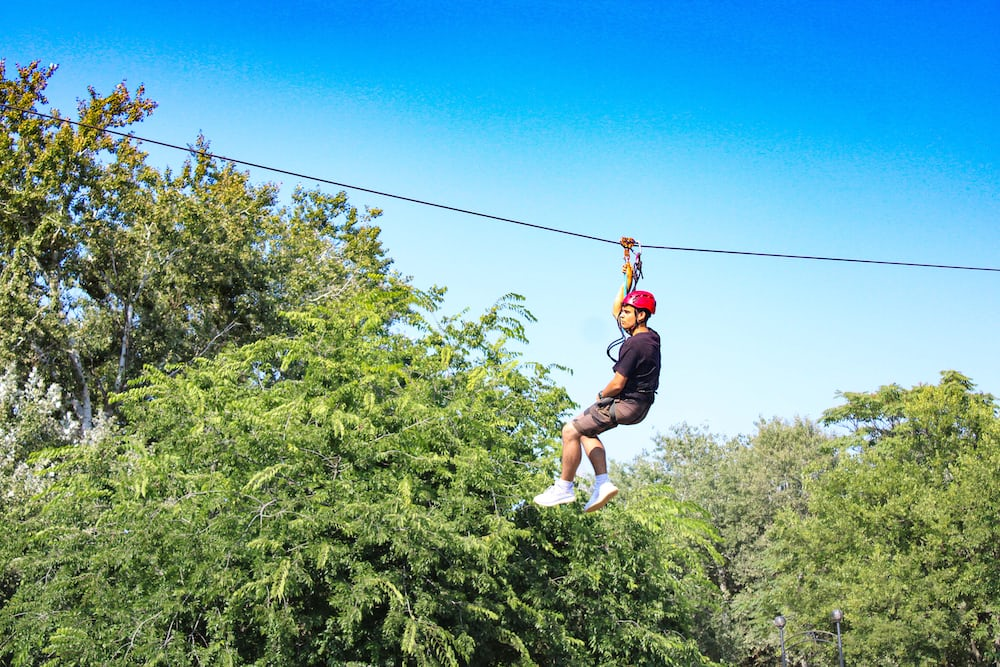

.jpg)
SkyDiving
Best Places for SkyDiving in India for Adventure Destination
2023
Skydiving is a term used to describe the sport of
freefalling (usually from an aeroplane) through the air
prior to opening a parachute. Skydiving is a great
adventure sport for giving your body a sensory overload
and massive adrenaline rush
skydiving, also called parachuting, use of a parachute—
for either recreational or competitive purposes—to slow
a diver's descent to the ground after jumping from an
airplane or other high place.
Read more

Scuba Diving
Best Places for Scuba diving in India for Adventure Destination
2023
Scuba diving is a mode of underwater diving whereby divers use breathing equipment that is completely independent of a surface air supply, and therefore has a limited but variable endurance. The name “scuba”, an acronym for “Self-Contained Underwater Breathing Apparatus. To dive into the deep oceans and to explore the world beneath is unexplainable in words. And to experience something like this, you need to go scuba diving in India.
Scuba diving may be done recreationally or professionally in a number of applications, including scientific, military and public safety roles, but most commercial diving uses surface-supplied diving equipment when this is practicable. Scuba divers engaged in armed forces covert operations may be referred to as frogmen, combat divers or attack swimmers.
Read more
.jpg)
Paragliding
Best Places for Paragliding in India for Adventure Destination
2023
Paragliding is the recreational and competitive adventure
sport of flying paragliders. It is lightweight, free-flying, foot launched glider aircraft with no rigid primary structure. The
pilot sits in a harness or lies supine in a cocoon like 'pod'
suspended below a fabric wing. It is a motor free sport
practised by the adventurous people.
It is weather dependent adventure aviation sport, done by
trained pilots either solo or with passenger. Paragliding wings
are specially designed aerofoil shape canopies called
“paraglider".
Read more
.jpg)
Surfing
Best Places for Surfing in India for Adventure Destination
2023
Surfing is a great way to stay in shape, have fun, and enjoy the outdoors. Surfing can be a great
way to relax, have fun, and get some exercise. It's also a great way to meet new people and see
new places
Surfing in India is growing in popularity. There are some outstanding spots along the country's
vast coastline where you can catch a wave and also learn to surf. The only issue is that the waves
aren't consistent and the surf does fall flat at times. You need to be at the right place at the right
time!
Waves generally rise between three and five feet most of the year. Bigger and faster world-class
waves (of over eight feet), suited to advanced or professional surfers, can be experienced just
before and during the monsoon from May to September. You can expect plenty of rain with them
though! The big swells decline from October to December, after which conditions return to
normal gentle waves.
Read more

Rock Climbing
Best Places for Rock Climbing in India for Adventure Destination
2023
Rock climbing is the sport or activity of climbing rock faces, especially with the aid of ropes and special equipment. The concept is to reach an endpoint, or a summit, of a rock face or structure. This can be done with specific equipment, depending on the difficulty and severity of the climb. It can be perilous, but that is often considered a positive aspect of the adventure.
Read more
.jpg)
Bungee jumping
Best Places for Bungee jumping in India for Adventure Destination
2023
Bungee jumping is an action filled recreational activity that
involves head-first jumping from a tall structure with an
elastic cord attached into participants feet. The tall structure
can be a building, crane, bridge or even a helicopter.
Bungee jumping involves leaping from a height connected
to a large elastic rope, which is tied to the feet, specifically the
ankles. This is an adrenaline- filled activity.
Read more

Parasailing
Best Places for Parasailing in India for Adventure Destination
2023
Parasailing also known as parascending, paraskiing or parakiting, is a recreational kiting activity
where a person is towed behind a vehicle while attached to a specially designed canopy wing that
resembles a parachute, known as a parasail wing. The manned kite's moving anchor may be a
car, truck, or boat.
Read more

Mountain biking
Best places for mountain biking in India for Adventure Destination
2023
Mountain biking is the sport of riding bicycles off-road. Often this is done over rough terrain. Mountain
biking uses specially designed mountain bikes. Mountain bikes are similar to other bikes, but have
features designed to make them stronger and hold up in rough terrain.
Read more

Microlight Flying
Best Places for Microlight Flying in USA for Adventure Destination
2023
Microlight Flying, These all three words have almost the same inference and are used to
define the almost similar types of aircrafts in different countries which does not comply with the
international airworthiness standards and can be used only for sport or hobby flying or air racing.
Ultralight in the USA means a single seat aircraft which can carry only the pilot and is used by
him only for sport flying. No licence is needed in the USA to fly an Ultralight. Flying for an
American citizen is their birth right, as aviation was born in the United States, this has been
added in their constitution.
If one more seat it added to the Aircraft, the category changes to Light Sport Aircraft / Amateur
Built Aircraft, hence medical and Pilots licence becomes mandatory. In Thailand Ultralight is an
aircraft one or two seat, with all up weight of 500 Kgs, used for hobby or sport flying and
Ultralight or Sporting Pilots License is mandatory.In Canada, a Microlight is called an Advanced
Ultralight and has the same meaning as that of a Microlight in Indian regulations, Microlight
Pilots Licence is needed to Fly.
Read more

Mountain Trekking
Best Places for Mountain Trekking in USA for Adventure Destination
2023
Trekking is recreational activity that involves covering any specified journey on foot. This is
mostly done in rural areas and rugged regions. Trekking is often done in combination with
backpacking and rock climbing. Trekking is mainly done to have an interaction with nature.The
U.S. is a country of 50 states covering a vast swath of North America, with Alaska in the
northwest and Hawaii extending the nation’s presence into the Pacific Ocean. Major Atlantic
Coast cities are New York, a global finance and culture center, and capital Washington, DC.
Midwestern metropolis Chicago is known for influential architecture and on the west coast, Los
Angeles' Hollywood is famed for filmmaking.
Read more

Waterfall Sailing
Best Places for Waterfall Sailing in USA for Adventure Destination
2023
Not just one but three waterfalls create the magnificence that is North America's largest falls,
Niagara: Horseshoe Falls, American Falls and Bridal Veil Falls. They straddle the US and
Canadian border formed by the Niagara River, and no matter your vantage point, they are
wondrous.Not just one but three waterfalls create the magnificence that is North America's
largest falls, Niagara: Horseshoe Falls, American Falls and Bridal Veil Falls. They straddle the
US and Canadian border formed by the Niagara River, and no matter your vantage point, they
are wondrous.The one state, in particular, that has slightly more waterfalls than any other is
Washington - with its neighbor, Oregon, being a close second. Washington's landscape is
chiseled by the most extreme and breathtaking mountains, rivers that curve through cliffsides,
and lush forests that envelop much of the state.
Read more

Skiing
Best Places for Skiing in USA for Adventure Destination
2023
The undisputed champion of the world of skiing is undoubtedly France. Its many resorts are
easily accessible and are the most popular European winter holiday destination in the world. The
Alps are some of the most stunning mountains you will ever be able to lay your eyes on.Some of
the most popular skiing locations in India are Gulmarg in Jammu and Kashmir,Solang in
Himachal Pradesh and Auli in Uttarakhand. The skiing season in India is from January to
March.Colorado, Nevada, and Utah are some of the great places to go skiing. But it there are
plenty of other corners where you can hit the slopes. There could even be some fantastic hidden
slopes right around the corner from where you live in US. The biggest ski area in the United
States.List and map of all 525 ski resorts in the United States of America. In the United States of
America, you can look forward to 11,284 kilometres of slopes: the ski resorts are served by
2,877 ski lifts.
Read more

Base Jumping
Best Places for Base Jumping in USA for Adventure Destination
2023
Does Base jumping sound familiar? Then you already know what it means. In case you don’t,
B.A.S.E stands for Building, Antenna, Span, and Earth, the four most common fixed objects
adventurers like to parachute from. In short, the world’s most dangerous sports activity.Often
people confuse BASE jumping with skydiving because they both involve jumping and
parachuting with a parachute that looks similar when it’s open. However, the difference is huge.
Skydiving involves jumping from a moving object (airplane, helicopter) with a parachute and a
reserve. BASE jumpers, on the other hand, jump from fixed objects using a one-parachute
system. Some of them wear wingsuits. Talk about an adrenaline rush? While skydivers open
their chutes at around 2,000 feet (609.6 meters), the minimum BASE jump height is around 200
feet (60.96 meters). This means that BASE jumpers have around 15 seconds to deploy their
parachutes and land safely.
Read more

JetSki
Best Places for Jetski in USA for Adventure Destination
2023
JetSki racing is a water sport similar to powerboat racing, in which riders use jet skis to compete. The sport is mostly practiced at a recreational level in several countries around the world. At a competitive level, Jet Ski racing is popular in the United States and Australia. Jet Ski is a brand name for a personal watercraft. Personal watercraft (PWC) are typically small and easy to transport, with a motorcycle-like riding position and the capacity to carry a driver and up to two passengers. The two major types of jet skis are the stand-up and sit-down categories. The latter offer comfortable rides for 2-3 passengers, while riding a stand-up is always a solo activity. There are six common categories of watercraft: Rec-Lite, Recreation, Luxury and Performance, Tow Sports and Sport Fishing. The original concept of a PWC can be traced back to a man by the name of Clayton Jacobsen. His simple craft was designed to let people ski across water without the need to use a larger boat. The Jet Ski didn't come into the spotlight until Kawasaki decided to mass produce them, giving it the name we know today.
Jetski has a jet propulsion engine, which has an impeller that uses rotating fan blades to suck water into the engine and then forcefully eject it. These two motions—sucking in water and then ejecting it back out—are what propel the jet ski forward. Jet skis have throttles, similar to those on motorcycles.
Read more
.jpeg)
Kayaking
Best Places for Kayaking in USA for Adventure Destination
2023
Kayaking is a fun water sport adventure. It involves the use of kayak, a narrowboat with a double- blade paddle to move on water. The driver is supposed to navigate through the waterways by sitting face-forward and marching ahead with alternating side-to-side paddle strokes. Kayaking was originally invented for hunting.
Kayaks are a kind of boat that is slim and small is used by a limited number of people, often a single person at a time. It has another name called as a canoe.
Kayaking is one such adventure sport that is gradually gaining prominence in our country. One of many reasons we love kayaking is that its one of the greenest ways to get out on the water without disrupting local ecosystem. Kayaks are completely sustainable, which means no gasoline, no oil, no sound pollution from motors.
Kayaking is not as hard to learn as you might think. You need a guide or instructor to help you learn how to enter and exit a kayak, how to perform the forward stroke and the sweep stroke for turning the boat and a few lessons on safety.
Kayaking can be dangerous if you don't know what to avoid and how to prepare. But if you're knowledgeable about kayaking obstacles, prepared for the weather and carry the proper safety gear then kayaking is an extremely safe and fun activity to enjoy on the water.
Different types of kayaks: white water kayaks, junior kayaks, touring kayaks, sea kayaks, recreational kayaks, sit-on-top kayaks.
White water kayaking is a popular adventure sport around the world that gives thrills and chills similar to white water rafting.
Read more
Microlight Flying
Best Places for Microlight Flying in USA for Adventure Destination
2023
Microlight Flying, These all three words have almost the same inference and are used to
define the almost similar types of aircrafts in different countries which does not comply with the
international airworthiness standards and can be used only for sport or hobby flying or air racing.
Ultralight in the USA means a single seat aircraft which can carry only the pilot and is used by
him only for sport flying. No licence is needed in the USA to fly an Ultralight. Flying for an
American citizen is their birth right, as aviation was born in the United States, this has been
added in their constitution.
Read more
.jpeg)
Rafting
Best Places for Rafting in USA for Adventure Destination
2023
Rafting is a sport in which rafters use an inflatable raft to race with others. The team that reaches the destination first wins the race. The racing is done on white water or rough water of different degrees. The rafters use double blades to paddle the boat.
White water rafting is a recreational water sport where an inflatable raft carries 4 to 8 people down white water rapids on a river. White water river rafting is considered an adventure sport and has varying levels of difficulty.
The name white water comes from the churning white water created when a river is in full flow over obstacles. It is the mixture of rapids and waterfalls that give the river its white, foamy appearance. The white water is caused by the turbulence of the water as it cascades over rocks and boulders. “Rapids means an extremely fast moving part of a river,
caused by a steep descent or a rock in the riverbed
Read more

Skiing
Best Places for Skiing in USA for Adventure Destination
2023
The undisputed champion of the world of skiing is undoubtedly France. Its many resorts are
easily accessible and are the most popular European winter holiday destination in the world. The
Alps are some of the most stunning mountains you will ever be able to lay your eyes on.Some of
the most popular skiing locations in India are Gulmarg in Jammu and Kashmir,Solang in
Himachal Pradesh and Auli in Uttarakhand. The skiing season in India is from January to
March.Colorado, Nevada, and Utah are some of the great places to go skiing. But it there are
plenty of other corners where you can hit the slopes. There could even be some fantastic hidden
slopes right around the corner from where you live in US. The biggest ski area in the United
States.List and map of all 525 ski resorts in the United States of America. In the United States of
America, you can look forward to 11,284 kilometres of slopes: the ski resorts are served by
2,877 ski lifts.
Read more
.jpeg)
Snowboarding
Best Places for Snowboarding in USA for Adventure Destination
2023
Snowboarding is a winter sport that involves descending a slope that is covered with snow while standing on a board attached to a rider's feet, using a special boot set onto a mounted binding. The development of snowboarding was inspired by skateboarding, sledding, surfing and skiing. Snowboarding, winter sport with roots in skiing, surfing, and skateboarding where the primary activity is riding down any snow-covered surface while standing on a snowboard with feet positioned roughly perpendicular to the board and its direction, further differentiating it from skiing, in which riders face forward. Various snowboarding styles: freestyle, freeride, alpine, jibbing, slopestyle, big air, half-pipe, snowboard cross, snowboard racing. Snowboards are the basic equipment for snowboarding and are used for sliding over the snow filled surface. Usually the snowboard is made of hard wood core that is sandwiched between multiple layers of fibre glass. Other elements like carbon fibre, Kevlar, aluminium are also used in the making of a modern snowboard. There are two snowboard stances, regular and goofy. A regular stance means that your left foot is forward, while a goofy stance means that your right foot is forward. There is no correct snowboard stance, it is all about what feels good to you. While snowboarding, you use your quadriceps and hamstrings to push forward and your calves to guide and turn the board. You also engage your core to remain balanced as well as your feet and ankles to stay upright. Snowboarding are thrilling activities and great workouts. Both sports are excellent cardiovascular exercises that strengthen the heart. Because they are also weight-bearing exercises, they strengthen your bones as they tone your muscles. Snowboarding are great for your mental health, as they help relieve stress and anxiety.
Being in the fresh air and surrounded by beautiful scenery can do wonders for your mental wellbeing.
Read more

Mountain Trekking
Best Places for Mountain Trekking in USA for Adventure Destination
2023
Snowboarding is a winter sport that involves descending a slope that is covered with snow while standing on a board attached to a rider's feet, using a special boot set onto a mounted binding. The development of snowboarding was inspired by skateboarding, sledding, surfing and skiing. Snowboarding, winter sport with roots in skiing, surfing, and skateboarding where the primary activity is riding down any snow-covered surface while standing on a snowboard with feet positioned roughly perpendicular to the board and its direction, further differentiating it from skiing, in which riders face forward. Various snowboarding styles: freestyle, freeride, alpine, jibbing, slopestyle, big air, half-pipe, snowboard cross, snowboard racing. Snowboards are the basic equipment for snowboarding and are used for sliding over the snow filled surface. Usually the snowboard is made of hard wood core that is sandwiched between multiple layers of fibre glass. Other elements like carbon fibre, Kevlar, aluminium are also used in the making of a modern snowboard. There are two snowboard stances, regular and goofy. A regular stance means that your left foot is forward, while a goofy stance means that your right foot is forward. There is no correct snowboard stance, it is all about what feels good to you. While snowboarding, you use your quadriceps and hamstrings to push forward and your calves to guide and turn the board. You also engage your core to remain balanced as well as your feet and ankles to stay upright. Snowboarding are thrilling activities and great workouts. Both sports are excellent cardiovascular exercises that strengthen the heart. Because they are also weight-bearing exercises, they strengthen your bones as they tone your muscles. Snowboarding are great for your mental health, as they help relieve stress and anxiety.
Being in the fresh air and surrounded by beautiful scenery can do wonders for your mental wellbeing.
Read more

Waterfall Sailing
Best Places for Waterfall Sailing in USA for Adventure Destination
2023
Not just one but three waterfalls create the magnificence that is North America's largest falls,
Niagara: Horseshoe Falls, American Falls and Bridal Veil Falls. They straddle the US and
Canadian border formed by the Niagara River, and no matter your vantage point, they are
wondrous.Not just one but three waterfalls create the magnificence that is North America's
largest falls, Niagara: Horseshoe Falls, American Falls and Bridal Veil Falls. They straddle the
US and Canadian border formed by the Niagara River, and no matter your vantage point, they
are wondrous.The one state, in particular, that has slightly more waterfalls than any other is
Washington - with its neighbor, Oregon, being a close second. Washington's landscape is
chiseled by the most extreme and breathtaking mountains, rivers that curve through cliffsides,
and lush forests that envelop much of the state.
Read more

Ziplining
Best Places for Ziplining in USA for Adventure Destination
2023
Zip lining is an action-filled recreational activity that involves riding a steel cable on a protective seat or a belt between two points and generally on a valley that exhibits spectacular sceneries. A zip line is, at its most simple, a cable that starts at a higher point than it ends. Using the natural decline of the slope, a person or cargo can travel down the wire on a pulley system that minimizes friction to help the rider accelerate. A zipline also referred to as zip line, sypline, zip wire, aerial ropeslide, flying fox, etc. is an outdoor recreation
sport/adventure sport where a freely moving pulley is used to ride from the top to the bottom of an inclined cable.
Read more

Hiking
Best Places for Hiking in Germany for Adventure Destination
2023
Volksmarching (from German "Volksmarsch", people's march) is a form of non-competitive fitness
walking that developed in Europe in the mid-late 1960s.Winter hiking in Germany and Austria. Snow
under your feet, crystal clear mountain air filling your lungs and on top of that a breathtaking view to
enjoy: winter hiking is a real highlight for active mountain lovers in Oberstdorf and the
Kleinwalsertal.Walking is the oldest and most popular form of movement. More than 80 % of Germans
like or even enjoy walking. Almost one third of journeys is undertaken on foot.
Read more
.jpg)
Kayaking
Best Places for Kayaking in Germany for Adventure Destination
2023
Kayaking is not as hard to learn as you might think. You only need a few basic skills to paddle effectively.
You need a good guide or instructor to help you learn how to enter and exit a kayak, how to perform the
forward stroke and the sweep stroke for turning the boat, and a few lessons on safety.Some injuries
associated with canoeing and kayaking include: Shoulder – the muscular force required to push the
paddle through the water can cause an injury, such as a strain or sprain. Wrist – the repetitive motion of
moving the paddle can, over time, lead to overuse injuries of the wrist joints.
Read more

Paragliding
Best Places for Paragliding in Germany for Adventure Destination
2023
Paragliding is a type of extreme sport found in the early 1980s by people interested in aerial sports, and
it allows one to run off the slopes with free parachutes. Paragliding is generally more accessible than
other extreme sports since it does not require a special take off or a landing track.paragliding, sport of
flying parachutes with design modifications that enhance their gliding capabilitiesWith paragliding the
objective is to stay in the air, to fly. A paragliding wing generates lift through a forward motion in the air,
just like a glider.Paragliding is the recreational and competitive adventure sport for flying paragliders.
Paragliding is engine less or motor free sport and practised by the adventurous people.
Read more
.jpg)
Road Cycling
Best Places for Road Cycling in Germany for Adventure Destination
2023
Road cycling is the most widespread form of cycling in which cyclists ride on paved roadways.
It includes recreational, racing, commuting, and utility cycling. As users of the road, road
cyclists are generally expected to obey the same laws as motorists, however there are certain
exceptions.
Read more

Rock Climbing
Best Places for Rock Climbing in Germany for Adventure Destination
2023
Road cycling is the most widespread form of cycling in which cyclists ride on paved roadways.
It includes recreational, racing, commuting, and utility cycling. As users of the road, road
cyclists are generally expected to obey the same laws as motorists, however there are certain
exceptions.
Read more

Canyoning
Best Places for Canyoning in NewZealand for Adventure Destination
2023
Canyoning is an outdoor recreational activity that includes hiking, climbing, abseiling, swimming and even cliff jumping in a natural landscape. Canyoning is all about exploring hard-to-reach natural
areas by mostly following a water route down through numerous natural rock formations.
Read more

Bungee Jumping
Best Places for Bungee Jumping in NewZealand for Adventure Destination
2023
Bungee jumping is an action-filled recreational activity that involves head-first jumping from a tall structure with an elastic cord attached into participants' feet. That tall structure can be a building, crane, bridge or even a helicopter. The word "bungee" originates from West Country dialect of the English language, meaning "Anything thick and squat", as defined by James Jennings in his book "Observations of Some of the Dialects in The West of England" published 1825. In 1928, the word started to be used for a rubber eraser.Today, bungee cords are most often used to secure objects without tying knots and to absorb shock. Inexpensive bungee cords, with metal or plastic hooks on each end, are marketed as a general utility item. Now, many fitness studios around the world offer bungee workouts. A bungee workout can enhance your coordination, boost your strength, and skyrocket your confidence.
It's a cardiovascular workout minus the impact, so it's gentler on the body's joints.
Read more

Heli-skiing
Best Places for Heli-skiing in NewZealand for Adventure Destination
2023
Heli-skiing is when you take a helicopter to access backcountry ski runs that are otherwise very difficult to reach. It is one of the most exhilarating, and unique, ski activities that you can do. Loading up a helicopter with some of your best friends and heli-skiing at Tyax Lodge is a once in a lifetime opportunity.The sport has been around for decades and it first hit the mainstream in the sixties, but the practice of using a helicopter to get to hard-to-reach places had been around in the Alps and in Alaska since the fifties. But opposition on social and environmental grounds led to France outlawing it in 1985.
Read more

Rafting
Best Places for Rafting in NewZealand for Adventure Destination
2023
Modern whitewater rafting as we know it dates back to 1842 when Lieutenant John Fremont began
exploring Colorado's Platte River. During this time, he and inventor Horace H. Day created a rubber raft
featuring four rubber cloth tubes and a wrap-around floor to help survey the Great Plains and Rocky
Mountains areas. In earlier days, people used to transport things using rafts, hence the name of rafting
came into the picture. In 1842, Lieutenant John Fremont of the U.S. Army first introduced rafting
expedition on the Platte River. In ancient days, rafts were made from rubber cloth tubes and a
floor.Rafting and whitewater rafting are recreational outdoor activities which use an inflatable raft to
navigate a river or other body of water. This is often done on whitewater or different degrees of rough
water.
Read more

skydiving
Best Places for skydiving in NewZealand for Adventure Destination
2023
The Main idea of skydiving is to free-fall until a certain altitude from an aircraft or a mountain, fly about
30 to 180 seconds, and then gradually float in the air until you land on safe ground with a parachute. the
sport of jumping from an airplane and typically executing a prolonged free fall before deploying a
parachute.
Read more
.jpeg)
Kayaking
Best Places for Kayaking in France for Adventure Destination
2023
Kayaking is a fun activity that involves moving through water in a small water vessel with the aid of a double-bladed paddle. It allows the boat driver to maneuver
through waterways by sitting face-forward and propelling ahead with alternating side-to-side paddle strokes.
Read more

Paragliding
Best Places for Paragliding in France for Adventure Destination
2023
Paragliding is a sport in which the players fly in the air using paragliders. It’s one of the rawest and most pure forms of flight. Paragliding demands jumping from high heels and to ski in the air for long hours. France has a multitude of perfect paragliding spots, from the snow-capped peaks of the French Alps, to the beaches of Normandy. This stunning country has a wide variety of paragliding and tandem
paragliding experiences to offer everyone, from experienced paragliders to complete beginners to the sport.
Read more

Rock climbing
Best Places for Rock climbing in France for Adventure Destination
2023
Rock climbing is an adventure that involves climbing up, down, or across natural rock formations or artificial rock walls. It involves physical & mental strength, and adventurers seek to take such expeditions more often these days. India is a hub of adventure freaks as the diversity and enormous alternatives of
thrilling activities favor daring minds to have enthralling experiences with their favorite sport.
Read more

Scuba Diving
Best Places for Scuba diving in France for Adventure Destination
2023
Scuba diving is an underwater swimming activity involving the use of self-contained underwater breathing apparatus (SCUBA).
Scuba diving is mainly done for the attraction of the unattainable undersea world. It is one area of nature that humankind has not been able to control fully; we are not able to breathe underwater.
Hence, scuba diving allows us to be in that underwater world, even if it is just for a limited amount of time.
Read more

Skiing
Best Places for Skiing in France for Adventure Destination
2023
Skiing, recreation, sport, and mode of transportation that involves moving over snow by the use of a pair of long, flat runners called skis, attached or bound to shoes or boots. Competitive skiing is divided into Alpine, Nordic, and freestyle events. Many peoples who lived in climates with snow for many months of the year developed some form of skiing.
Skis are still occasionally used for travel in rural areas of Russia and the Scandinavian countries.
Read more